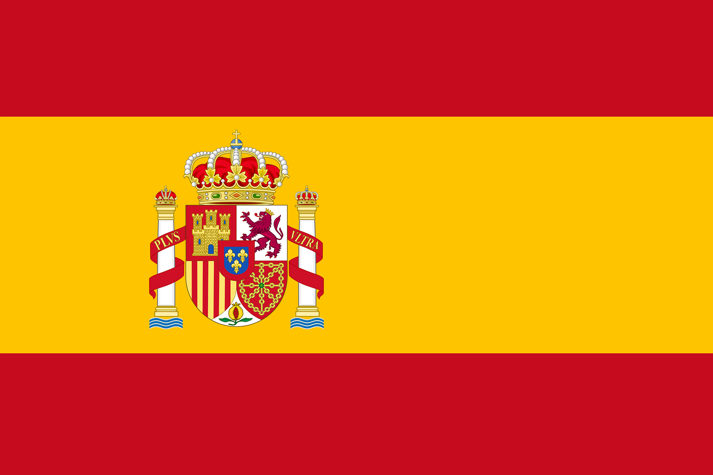

Hi, I'm Ambre

I am a student at Kedge Business School and I would be honored to take part in your project !
Here is the link of my LinkedinLanguages

Qualities
I am a person that is always willing to try new things 🤓, I am really curious to learn anything that will allow me to improve myself 💪. My friends would say to you that I am a good listener 👂, my rugby team would tell you that I am a team player 🏉 and my teachers, that I am serious and resilient 👊.
Hobbies
As you might have understood I enjoy rugby so much, but I also like every kind of sport as tennis, basketball or volleyball 🾠🀠ğŸ. Moreover, I love travelling so I hope working abroad ✈️. Last but not least, I am keen on organizing event, as I have done in preparatory class when I was member of the team that held the school gala of 700 students 💃 🕺.